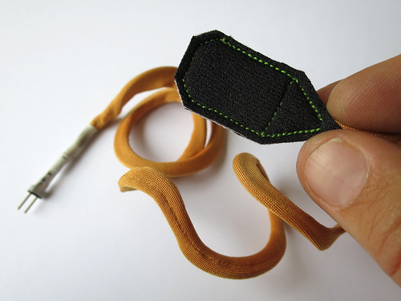

A2: Sensing position
Inspiration

My inspiration was the light touch pressure sensor from Kobakant.

I started out cutting pieces of neoprene and copper fabric, following the Kobakant design.


Then I soldered the wire onto the fabric (being very careful as it's easy to burn the copper fabric and just have a hot mess of solder and melted copper).

Then I tested the connections (all good!)

I insulated with hot glue which, in retrospect, what not the best design decision. But it worked.


I layered it with velostat.

Making the circuit and getting a sensor reading!